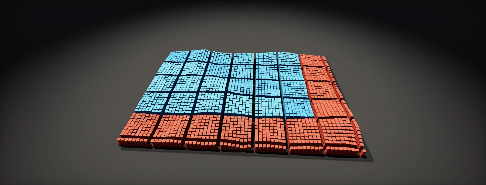

Compute Shaders
A compute shader is GPU code you start yourself, with no triangles involved. This unit explains threads and groups, which thread does what, waves, shared memory, atomics, dispatching from C#, reading results back, and when compute is the right tool.

A shader without triangles
Every shader so far was started by the pipeline: the rasterizer finds the pixels a triangle covers and runs the pixel shader once for each. A skips all of that. You choose how many copies to run, each copy gets a number, and it can read and write any texture or buffer you give it. No triangles, no fixed output pixel.
The copies are called threads, and they are launched in fixed-size blocks called . You set the size of a group in the shader and the number of groups when you start it (the ). The total is simply the product:
The work is the same kind as a pixel shader's: thousands of small, identical programs running in parallel and in no fixed order. What changes is who decides how many there are, and where each one writes.
Covering an image with groups
The most common job is one thread per pixel of a texture. With 8 × 8 threads per group, a 1920 × 1080 image needs ⌈1920 / 8⌉ × ⌈1080 / 8⌉ groups. The division is rounded up, so when the size is not a multiple of the group size the last row and column of groups hang over the edge. Those threads must do nothing, or they write outside the texture:
#pragma kernel CSMain // the function C# will start
RWTexture2D<float4> _Result; // a texture this shader may write
uint2 _Size; // its width and height
[numthreads(8, 8, 1)] // 64 threads per group
void CSMain(uint3 id : SV_DispatchThreadID)
{
if (any(id.xy >= _Size)) return; // threads past the edge stop here
float2 uv = (id.xy + 0.5) / _Size;
_Result[id.xy] = float4(uv, 0, 1);
}
That is a complete compute shader. The square brackets after a texture (_Result[id.xy]) read or write one texel directly by its integer position: no sampler, no filtering, no mipmap selection.
Which thread am I?
A thread finds out what to work on from a few built-in numbers, its semantics. SV_GroupID is the group's position in the dispatch, SV_GroupThreadID the thread's position inside its group, and SV_DispatchThreadID combines them into one position across the whole dispatch. SV_GroupIndex flattens the position inside the group into a single number, handy for indexing shared memory. Pick a thread:
For a list instead of an image, use one dimension: [numthreads(64, 1, 1)], ⌈count / 64⌉ groups, and id.x as the index into the buffer.
Group size and waves
The GPU does not run threads one at a time. It runs them in (warps on NVIDIA) of 32 or 64 lanes that execute the same instruction together, exactly like pixels. A group is split into whole waves, so a group size that is not a multiple of the wave width leaves lanes idle:
64 threads per group is the safe default: a whole wave on hardware with 64 lanes and two full waves on hardware with 32. Groups can hold up to 1024 threads, which only pays off when the threads share data (next chapter). Branches behave as in pixel shaders: if the lanes of one wave take different paths, the wave runs both.
Many threads, one address
Threads run in no fixed order, so two threads writing the same texel or buffer element is a : one write wins, unpredictably. For anything that collects results, like counting pixels per brightness for a histogram or adding particles to a list, use atomic operations. InterlockedAdd, InterlockedMin and InterlockedMax make the read, change and write one step that cannot be interrupted. The price is that threads hitting the same address wait for each other:
The fix is the same as for blurs: count into a groupshared array first (one atomic per pixel, but only among the group's threads), then have each group add its partial result to the global buffer once per bin. Append buffers are an atomic counter plus a list, packaged.
Starting it from C# and getting results back
On the CPU side, a compute shader is an asset with one or more (the functions named by #pragma kernel). C# finds a kernel, binds the textures and buffers it uses, sets values and dispatches:
int kernel = shader.FindKernel("CSMain");
shader.SetTexture(kernel, "_Result", renderTexture); // RenderTexture with enableRandomWrite = true
shader.SetInts("_Size", width, height);
shader.GetKernelThreadGroupSizes(kernel, out uint gx, out uint gy, out _);
shader.Dispatch(kernel, Mathf.CeilToInt(width / (float)gx), Mathf.CeilToInt(height / (float)gy), 1);
Textures and buffers stay on the GPU, so a material can use the result directly, in the same frame, with no copying. Reading results back on the CPU is the expensive direction: the CPU has to wait until the GPU has actually run the work, usually one to three frames later, and then copy the data across. AsyncGPUReadback does that without stalling the frame; the result arrives in a callback a few frames later:
AsyncGPUReadback.Request(buffer, request =>
{
if (request.hasError) return;
var values = request.GetData<float>(); // NativeArray, valid only inside this callback
Debug.Log($"first value: {values[0]}");
});
When to use compute
Use a compute shader when the work is not "colour the pixels of these triangles":
- Simulation: particles, cloth, fluids, boids. One thread per particle, state in structured buffers that persist between frames.
- Image processing with shared data: blurs, histograms for auto exposure, reductions (average, min, max).
- Generating data: noise and mask textures, channel packing, mesh deformation, terrain.
- Culling and indirect drawing: the GPU decides what to draw and writes the draw arguments itself.
Keep a pixel shader when you are shading geometry: it gets interpolated attributes, hardware blending, MSAA and screen derivatives for free. Compute has no derivatives, so texture reads must pick the mip themselves with SampleLevel. Check platform support too: WebGL has no compute shaders, and older mobile GPUs have tight limits (SystemInfo.supportsComputeShaders).
Build it in Unity HDRP
A complete, working example: a compute shader writes an animated noise texture every frame, and a Shader Graph material uses it straight away, with no copy to the CPU. Written for Unity 6 with HDRP 17; Unity 2022 LTS works the same apart from a few renamed menu entries.
- Create the compute shader: Create > Shader > Compute Shader, name it
NoiseField, and replace its contents with the file below. - Create a Lit Shader Graph with a Texture2D property whose Reference is
_ComputeMask. Sample it and use the result, for example as emission or to lerp between two colours. Right-click the graph and choose Create > Material, then assign the material to an object. - Add
ComputeNoise.csto the object, assign Shader (the compute asset) and Target (the object's renderer). The texture animates in Play mode. - The
RenderTextureis created withenableRandomWrite = true: without it, a compute shader cannot write to it and the dispatch fails with an error about a missing UAV flag. - Read the result on the CPU only if you must, with
AsyncGPUReadback.Request(rt, 0, callback); never withReadPixelsin a loop. - To run compute work at a specific point in HDRP's frame (for example after the opaque objects), record
ctx.cmd.DispatchCompute(...)in theExecutemethod of a C# Custom Pass. Marching a Cloud Layer uses compute to bake its 3D noise. HDRP's camera buffers are texture arrays, so compute code that reads them uses theTEXTURE2D_Xmacros fromTextureXR.hlsl.
#pragma kernel CSMain
RWTexture2D<float4> _Result; // written by this shader
uint2 _Size; // texture size in texels
float _SimTime;
float _Scale;
float Hash(float2 p) { p = frac(p * float2(123.34, 456.21)); p += dot(p, p + 45.32); return frac(p.x * p.y); }
float Noise(float2 p)
{
float2 i = floor(p), f = frac(p);
f = f * f * (3.0 - 2.0 * f);
float a = Hash(i), b = Hash(i + float2(1, 0)), c = Hash(i + float2(0, 1)), d = Hash(i + 1);
return lerp(lerp(a, b, f.x), lerp(c, d, f.x), f.y);
}
[numthreads(8, 8, 1)]
void CSMain(uint3 id : SV_DispatchThreadID)
{
if (any(id.xy >= _Size)) return; // threads past the edge do nothing
float2 uv = (id.xy + 0.5) / _Size;
float2 p = uv * _Scale + _SimTime * 0.15;
float n = 0, amp = 0.5;
for (int o = 0; o < 5; o++) { n += amp * Noise(p); p = p * 2.03 + 1.7; amp *= 0.5; }
_Result[id.xy] = float4(n, n, n, 1);
}using UnityEngine;
// Dispatches NoiseField.compute every frame and gives the result to a material.
[ExecuteAlways]
public class ComputeNoise : MonoBehaviour
{
public ComputeShader shader;
public Renderer target; // the object whose material shows the result
public string textureProperty = "_ComputeMask"; // Reference name in the Shader Graph blackboard
public int size = 512;
public float scale = 6f;
RenderTexture rt;
int kernel = -1;
MaterialPropertyBlock block;
static readonly int ResultId = Shader.PropertyToID("_Result");
static readonly int SizeId = Shader.PropertyToID("_Size");
static readonly int TimeId = Shader.PropertyToID("_SimTime");
static readonly int ScaleId = Shader.PropertyToID("_Scale");
void OnEnable()
{
if (!SystemInfo.supportsComputeShaders) { Debug.LogWarning("No compute support"); enabled = false; return; }
rt = new RenderTexture(size, size, 0, RenderTextureFormat.ARGBHalf)
{
enableRandomWrite = true, // allows writes from a compute shader
wrapMode = TextureWrapMode.Repeat,
name = "ComputeNoise"
};
rt.Create();
block = new MaterialPropertyBlock();
}
void Update()
{
if (shader == null || rt == null) return;
if (kernel < 0) kernel = shader.FindKernel("CSMain");
shader.SetTexture(kernel, ResultId, rt);
shader.SetInts(SizeId, size, size);
shader.SetFloat(TimeId, Application.isPlaying ? Time.time : 0f);
shader.SetFloat(ScaleId, scale);
shader.GetKernelThreadGroupSizes(kernel, out uint gx, out uint gy, out _);
shader.Dispatch(kernel, Mathf.CeilToInt(size / (float)gx), Mathf.CeilToInt(size / (float)gy), 1);
if (target != null)
{
target.GetPropertyBlock(block);
block.SetTexture(textureProperty, rt);
target.SetPropertyBlock(block);
}
}
void OnDisable()
{
if (rt != null) { rt.Release(); DestroyImmediate(rt); rt = null; }
kernel = -1;
}
}Every later unit that simulates or generates data uses this pattern: cloth, channel packing, and the cloud pass. When a dispatch writes something a draw in the same frame reads, Unity inserts the barrier for you.
Identical C# and compute code. To dispatch at a point in URP's frame, record cmd.DispatchCompute in a ScriptableRenderPass added by a ScriptableRendererFeature (Unity 6: with the Render Graph API, AddComputePass).
Compute shaders are C++ global shaders (FGlobalShader with a .usf file) added to the Render Dependency Graph. For most tech-art work, Niagara Simulation Stages with Grid2D/3D data interfaces, or the Custom HLSL module in Niagara, run compute-style code without C++.
Sources and further reading
The formulas and engine details in this unit come from these references. Engine documentation changes between versions.
- DocsCompute shaders (Unity Manual)UnityKernels, platform support and how Unity compiles compute shaders.
- DocsComputeShader.DispatchUnityDispatching from C#.
- DocsAsyncGPUReadbackUnityReading results back without stalling.
- DocsnumthreadsMicrosoftGroup sizes and the ID semantics, with a diagram.
- TutorialCompute ShadersJasper Flick · Catlike CodingA step-by-step first compute shader in Unity, drawing many instances.
- GuideRDNA Performance GuideAMD GPUOpenWave sizes, group sizes and shared memory on real hardware.